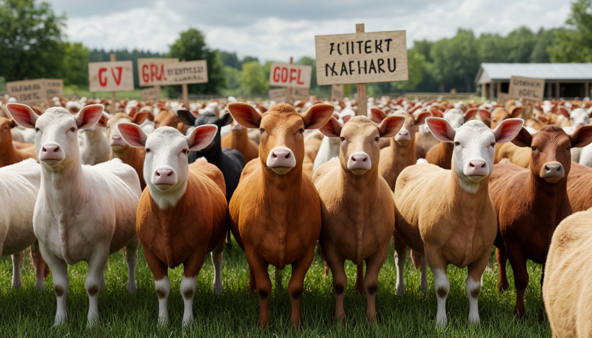

На соседней ферме начались крупные демонстрации против политики Фермера
Демонстранты выступают против введенных Фермером ограничений. Митинги и шествия охватили все стойла, собрав под свои знамена практически всё поголовье скота.
Демонстранты выступают против введенных Фермером ограничений. Митинги и шествия охватили все стойла, собрав под свои знамена практически всё поголовье скота.
С начала весенней посевной крупнейшая фермерская кредитная организация Хрюнбанк уменьшила ставки по линейке «Меньший %» и «ХрюнВклад».
В заключительной игре тура «Мясник» со счетом 1:0 победил в ожесточенной борьбе фермерскую «Конюшню». Единственный гол на 54-й минуте забил Визгун.
Во время археологических исследований на нашей ферме был обнаружен старинный клад XVIII века. Основные виды находок – предметы быта, культа и жёлуди.
Продюсер «Фермафильм» Барашек Шон анонсировал съемки сразу нескольких проектов, в которых будут задействованы созданные при помощи искусственного интеллекта (ИИ) образы актеров.